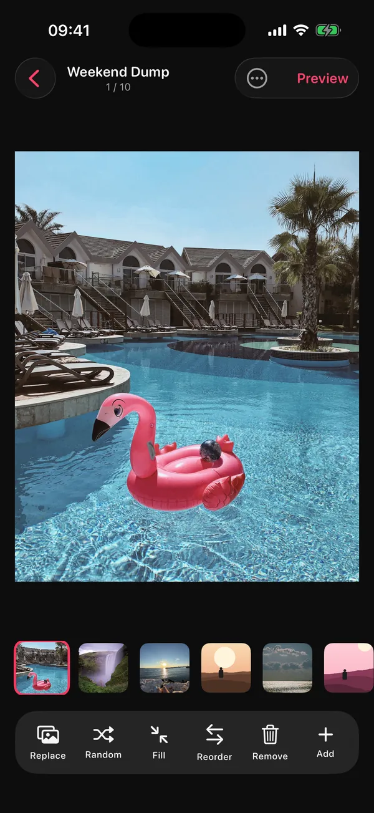
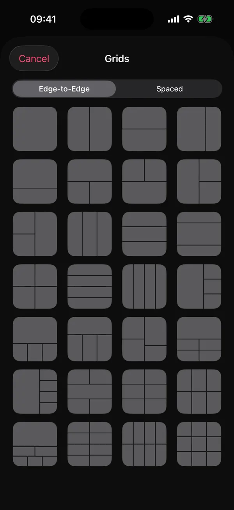

Who wrote this comparison, and how?
It's written by the developer of DUMP, one of the apps compared, so read it with that in mind. To keep it fair it doesn't rank apps: every fact comes from the apps' own App Store listings or policies, checked on 15 October 2026, and it says plainly when another app is the better choice.
Apps change their prices, limits and privacy labels often. Each claim below links to its source so you can check today's version. If something is out of date, email solostaseraofficial@gmail.com and it gets fixed.
What kinds of photo dump apps are there?
Two camps. Design studios (SCRL, Crsel, 17V28, SwipeMix, Unfold) give you templates, grids and seamless layouts, but you choose every photo. Auto-pickers (DUMP, MyDump, Lately, PostCheck, SelfieDump) choose the photos for you, then differ in how much design they offer.
Most of the big-name apps are design studios with years of ratings. The auto-pickers are newer; most launched in 2026. Choosing between the camps is the most useful decision you can make, because it decides whether the app saves you picking time or designing time.
How do the auto-picking photo dump apps compare?
They differ most in where the picking happens and what it costs. DUMP and Lately say they pick on your phone and carry the label "Data Not Collected". PostCheck sends photos to its servers and an AI provider. Prices range from completely free (Lately) to $49.99 a year.
| App | How it picks | Where picking happens | App Store privacy label | Price (US) | Free limit |
|---|---|---|---|---|---|
| DUMP: Carousel & Collage | Smart Dump drops blurry shots and burst repeats, mixes people, places and details; weekly Sunday draft; trip detection | On the iPhone (Apple Vision); picking makes no network calls (StoreKit only for purchases) | Data Not Collected | Free; optional Premium (price on the App Store) | Auto-built dumps of up to 10 items, 5 saved projects |
| Photo Dump: Carousel Maker (MyDump) | Pulls candidates (this month, recents, on this day, a trip); you swipe to keep or skip | On the iPhone, per its description | Data Linked to You | Pro $7.99/week or $44.99/year | Unlimited dumps of up to 5 photos (first dump up to 20) |
| Lately – Photo Dump Generator | Removes blurry, duplicate and closed-eye photos, then auto-designs a carousel | On the iPhone, per its description | Data Not Collected | Completely free (no in-app purchases listed) | None stated |
| PostCheck: Photo Dump Maker | Scores, ranks and orders shots, cuts weak ones, suggests captions and a song | Its servers and an AI provider (Anthropic), per its privacy policy; it says photos aren't kept after analysis | Data Linked to You | $4.99/week or month; $19.99 to $29.99/year | Not stated on the listing |
| SelfieDump: Photo Dump AI | Surfaces sharp, varied shots; collages; three AI caption ideas | On the iPhone, except photos you choose for its AI caption or collage features, which "may be sent to third-party AI providers" | Data Not Linked to You | $6.99/week or $49.99/year | Not stated on the listing |
Checked on 15 Oct 2026 from each app's US App Store listing (description, "App Privacy" and "In-App Purchases") and, for PostCheck, its privacy policy (last updated 28 Aug 2026). Prices are the US price points shown in each listing (DUMP's own price is on its App Store page); offers, trials and other regions differ.
How do the design-first carousel apps compare?
The design studios are older, bigger and more polished, with tens of thousands of ratings and large template libraries. None of them picks photos for you, and all five listings show the label "Data Used to Track You".
| App | Known for | US ratings | App Store privacy label | Price (US) |
|---|---|---|---|---|
| SCRL: Photo Collage Maker | Freeform and structured collages, seamless carousels, in-house templates; 16 languages; on the App Store since 2017 | 124,805 | Data Used to Track You | Weekly $4.99; yearly $19.99 to $34.99; other Premium plans $4.99 to $59.99; Pro $79.99 |
| Unfold: Reels & Story Maker (Squarespace) | Story, post and Reel templates | 158,584 | Data Used to Track You | Plus $2.99 to $4.99/month or $19.99/year; Pro $12.99/month; paid packs |
| Crsel: Carousel, Collage Maker | Aesthetic carousels, Reels covers, AI cut-outs; 14 languages | 6,230 | Data Used to Track You | Weekly $5.99; yearly $39.99 to $59.99 |
| Carousel Post Collage SwipeMix | Panorama and seamless carousels | 5,957 | Data Used to Track You | Monthly $4.99 to $9.99; yearly $19.99 to $39.99; paid packs |
| 17V28: Creative Carousel | 200+ templates incl. recap and scrapbook styles, community templates, seasonal drops | 1,859 | Data Used to Track You | Weekly $4.99; monthly $3.99; yearly $19.99 to $35.99 |
Checked on 15 Oct 2026 from each app's US App Store listing. Ratings change daily; DUMP launched on 2 Sep 2026 and had no US ratings yet on that date.
Which photo dump app should you choose?
Start from what slows you down. If it's design, pick a studio. If it's choosing photos, pick an auto-picker, then compare where it does the picking and what it costs. Here's when each one is the better fit, including when it isn't us.
- You want the biggest template library and a community: SCRL is the long-standing default, and 17V28 has community templates and regular seasonal drops. DUMP's template library is smaller.
- You want it completely free: Lately lists no in-app purchases at all, and it also filters closed-eye photos, which DUMP doesn't do.
- You'd rather judge every candidate yourself: MyDump's swipe-to-keep picker and its Story collage are built for that.
- You want AI-written captions or a song suggestion: PostCheck and SelfieDump offer them; check their policies, since photos used for those features leave your phone. DUMP's captions are 60 hand-written lines (Premium), not AI.
- You want the app to pick on your phone, draft your week every Sunday, then let you design it: that's the gap DUMP was built for. Smart Dump runs on-device, the label is "Data Not Collected", and you get collage pages, 28 grids, seamless panoramas, frames and cut-out stickers.
- You need scheduling or analytics: none of the auto-pickers above lists post scheduling; a social media scheduler is the right tool. And on Android, DUMP isn't an option: it's iPhone and iPad only.
What should you check before giving an app full photo access?
Read the App Privacy section on the App Store listing, check the policy for where photos are processed, and try the airplane-mode test: if the app still picks and exports with no connection, your photos aren't being uploaded to do it.
- Privacy label: scroll to "App Privacy" on the listing. "Data Not Collected" is the strongest. "Data Used to Track You" means the app may link data about you with other companies' data for advertising, or share it with data brokers.
- Where photos go: search the privacy policy for "server", "upload" or "AI provider".
- Airplane mode: make a full dump offline. If it fails, something needs the internet.
- Limited access: iOS lets you share only selected photos. Good apps still work (DUMP shows how many it can see).
- Watermark: export one test post on the free plan and zoom into the corners.
- Subscription terms: compare weekly vs yearly prices; weekly plans cost far more over a year.
What else separates a good photo dump app from a frustrating one?
Two things people underrate: album export in posting order and no re-compression of photos you didn't edit. Together they decide how fast posting is and how sharp the result looks.
Album export in posting order
Instagram orders slides by the order you tap them; reordering later means dragging small thumbnails. An app that saves the finished dump into its own album, in sequence, turns posting into "open the album, tap top to bottom". DUMP does this; so do several of the newer pickers (MyDump and PostCheck both mention saving in posting order).
Re-compression
Instagram compresses everything you upload. If an app has already re-saved your untouched photos, they get compressed twice, which is where mushy skin tones and gradients come from. DUMP's Swipe Carousel export adds your original photos and videos to the album without re-encoding (date-stamped photos are the exception); collage pages are rendered at 2160 px. More in why Instagram ruins your photo quality.
Where does DUMP fit, and when isn't it the right choice?
DUMP fits if you want the picking done on your iPhone, a Sunday draft of your week, and a real design studio afterwards, with no account and no upload. It isn't the right choice if you need Android, scheduling, AI captions, video trimming or a huge template library.
| Criterion | DUMP 2.0 |
|---|---|
| Picks photos for you | Yes: Smart Dump, moments (weekend, month, year), detected trips, Sunday "Your week" draft |
| Where picking happens | On your iPhone with Apple's Vision framework; works in airplane mode |
| Privacy label | Data Not Collected; no account, no third-party SDKs |
| Watermark on images | None, free or Premium |
| Export | New Photos album in posting order; originals untouched in Swipe Carousel; 2160 px collage pages |
| Design tools | Collage pages, 28 grids, seamless panoramas, 40+ frames, 500+ stickers, cut-outs, date stamps |
| Price | Free (auto-built dumps of up to 10 items, 5 projects); optional Premium, weekly or yearly (price on the App Store) |
| Not available | Video trimming, a 3:4 canvas preset, TikTok sharing, AI captions, Android |


Frequently asked questions
Is there an app that automatically picks photos for a photo dump?
Yes, several. DUMP, MyDump, Lately, PostCheck and SelfieDump all pick or pre-select photos for you. They differ mainly in where the picking happens (on your phone or on a server) and in price. DUMP picks on-device with Apple's Vision framework and is labelled "Data Not Collected".
Which photo dump apps don't upload my photos?
Going by their own listings on 15 Oct 2026, DUMP and Lately say they pick on your phone and show "Data Not Collected". MyDump also says it scans on-device but shows "Data Linked to You". PostCheck sends photos to its servers and an AI provider. Always check the current listing and try the app in airplane mode.
What's a good SCRL alternative?
It depends on what you want from it. For a large template library and community, SCRL is still the default, with 17V28 and Crsel as close alternatives. If you want the app to pick your photos first, an auto-picker like DUMP is the different kind of alternative: on-device picking, no tracking label, and an optional Premium upgrade (price on the App Store).
Is DUMP free?
Yes. DUMP is free to download and use, with auto-built dumps of up to 10 items (Random Dump, Smart Dump and the Sunday draft), up to 5 saved projects and no watermark on images. Optional Premium (weekly or yearly plan, price on the App Store) unlocks 20-slide auto-built dumps, unlimited projects, the full design library, the Caption Generator and swipe-video export.
Do I need an app to make a photo dump?
No. You can select up to 20 photos in Instagram and post them as a carousel. An app helps when picking, ordering or quality becomes the slow part.
See if DUMP fits the way you post
On-device picking, a Sunday draft of your week, and a design studio, with no account and no upload. Free on iPhone and iPad; try it in airplane mode.
Free · iPhone & iPad · iOS 18.6+ · No account · Works offline
Sources
- App Store listings (US), checked 15 Oct 2026: DUMP, MyDump, Lately, PostCheck, SelfieDump, SCRL, Unfold, Crsel, SwipeMix, 17V28. Descriptions, privacy labels, in-app purchase prices and rating counts come from these pages and Apple's public lookup data.
- PostCheck privacy policy (last updated 28 Aug 2026), checked 15 Oct 2026.
- TechCrunch, 8 Aug 2024: Instagram carousels hold up to 20 photos and videos.
- DUMP facts were checked against the source code of DUMP 2.0, the version on the App Store on 15 Oct 2026.